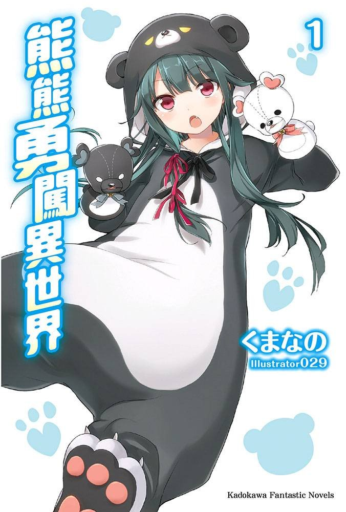

Kuma Kuma Kuma Bear
Novel Info's
Status: Ongoing
Genre: Action, Adventure, Comedy, Fantasy, Slice of Life
Author: Kumanano
Illustrator: 029
Volumes: 18
Original Publisher: Shufutoseikatsusha
English Publisher: Seven Seas
Fan Translation: N/A
Description/Sypnosis
Yuna, a 15 years old girl started playing the world’s first VRMMO. She has earned billions of yen in stocks. She confines herself in her house playing the game without going to school. Today, a huge update has arrived. She obtains a non-transferable rare bear outfit. But the equipment is so embarrassing that she can’t wear it even in the game. Furthermore, when she answers the survey regarding the new update and relaunches the game, she appears in unknown forest in a bear outfit. Where is this? Email from God? Different world? If she wears the bear outfit she’s a cheat, if she takes it off she’s a normal girl. Her adventure starts just like that. Yuna began doing as she liked.
Download Links
Epub & Pdf